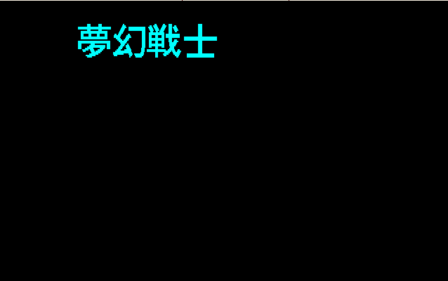
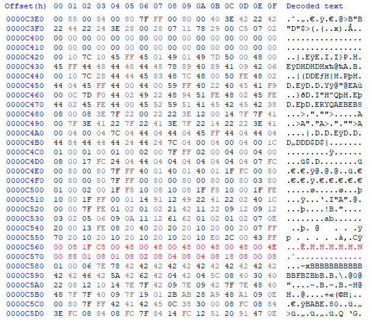
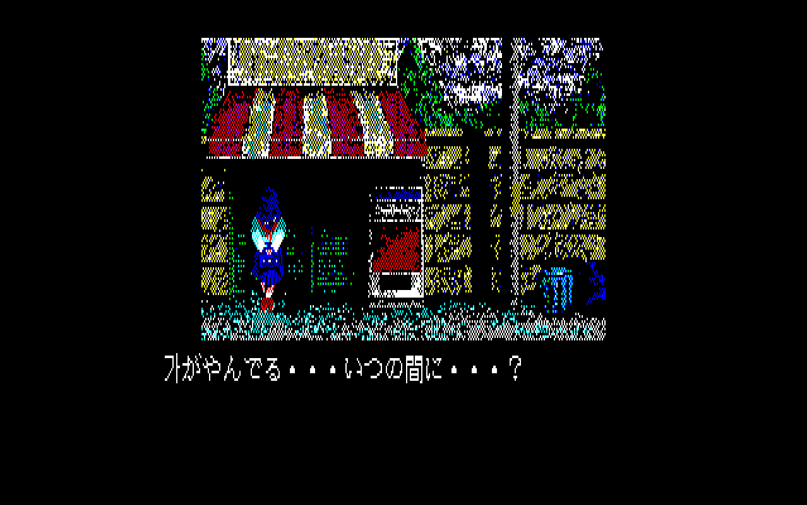

화면의 대상 하나를 고르고 확인할 결과를 정합니다.
이제는 분석 순서를 스스로 결정합니다
0~4부에서는 컴퓨터와 PC-88의 구조, Z80 코드, 디스크, 디버거를 익혔습니다. 5부에서는 타이틀 그래픽을, 6부에서는 이벤트 문자를 실제 QUASI88 로그로 분석했습니다. 7부에서는 이 지식을 어떤 순서로 사용해야 하는지 하나의 조사 과정으로 연결합니다.
처음 보는 게임을 실행하면 어느 주소에 원하는 데이터가 있는지 알 수 없습니다. 먼저 화면에서 조사할 대상을 선택하고, 관찰한 사실을 바탕으로 다음 조사 방법을 결정합니다. 이 강좌의 주소와 로그는 모두 기존 5·6부의 실측 자료에서 가져옵니다. 새로운 게임의 확인되지 않은 실행 결과를 만들어 내지 않습니다.
0~6부 통합PC-88 / QUASI88 0.7.4실제 실행 근거상황별 판단 연습독립 과제
최종 학습 목표
처음 보는 PC-88 게임에서도 조사할 대상과 질문을 정하고, 필요한 Monitor 조작을 선택하며, 실제 실행 결과로 다음 조사 방향을 설명할 수 있게 되는 것입니다.
처음 보는 PC-88 게임에서도 조사할 대상과 질문을 정하고, 필요한 Monitor 조작을 선택하며, 실제 실행 결과로 다음 조사 방향을 설명할 수 있게 되는 것입니다.
현재 PC와 Code, Data를 실제 실행으로 확인합니다.
한 가지 조건만 바꿔 검증하고 확인한 범위를 기록합니다.
분석의 기본 원칙
첫 breakpoint가 걸린 주소를 바로 정답으로 확정하지 않습니다. 현재 화면과 Code의 실제 관계를 확인하고, 예상이 틀리면 앞서 관찰한 사실로 돌아갑니다.
01 · PREPARE
실행 환경을 준비합니다
게임의 상태가 달라지면 이전 관찰과 비교할 수 없습니다. 원본 D88과 ROM을 별도로 보관하고 실험용 사본을 준비합니다. QUASI88에서 어떤 파일을 사용하고 있는지 확인한 뒤, 같은 장면까지 다시 실행할 수 있는 절차를 기록합니다.
먼저 확인할 질문 — 원본은 보존했는가? 게임이 정상 실행되는가? 어떤 디스크와 ROM을 사용하며, 지금 살펴보는 Code는 MAIN CPU에서 실행되는가?
| 준비 사항 | 이유 | 기존 강좌 |
|---|---|---|
| 원본과 실험용 파일 구분 | 잘못된 수정을 취소하고 같은 장면을 재현할 수 있도록 합니다. | 3부 |
| PC-88 기종·메모리 구조 이해 | 같은 CPU 주소라도 bank와 매핑 상태에 따라 서로 다른 메모리에 접근할 수 있습니다. | 1부 |
| MAIN CPU와 FDD SUB CPU 구분 | 게임 Code 조사와 디스크 읽기 조사는 실행 주체와 관찰 방법이 달라집니다. | 1부 · 3부 |
| QUASI88 Monitor 준비 | 현재 PC와 레지스터를 읽고, 필요할 때 breakpoint와 step으로 실측합니다. | 4부 |
| 장면과 입력 순서 기록 | 리셋 후 같은 화면에서 수정 전후를 비교하기 위한 조건입니다. | 5부 · 6부 |
이번 강좌의 기준: 기존 4~6부와 같은 QUASI88 0.7.4 Monitor를 예시로 사용합니다. 아래 주소들은 《몽환전사 바리스》의 실제 실습에서 확인한 주소이므로 다른 게임에 그대로 적용해서는 안 됩니다.
점검 ①
실험 도중 ROM을 바꾼 뒤 화면이 달라지지 않았다면, 새로운 주소를 찾기 전에 무엇을 확인하겠습니까?
확인할 답
이번 실행에 어떤 ROM이 실제로 로드됐는지, 원본 Script가 복구됐는지, 수정 전과 실행 조건이 같은지 먼저 확인합니다. 그다음 Code나 Data를 다시 조사합니다.
02 · CHOOSE
화면에서 조사 대상을 하나 고릅니다
타이틀·배경·문자·메뉴를 한꺼번에 조사하면 현재 PC를 화면의 어느 변화와 연결해야 할지 판단하기 어렵습니다. 화면에서 분리해 관찰할 수 있는 요소 하나를 먼저 고릅니다.


| 조사 질문 | 무엇을 확인하면 답을 얻는가? | 아직 단정할 수 없는 것 |
|---|---|---|
| 작은 타이틀 그래픽을 처리하는 Code는 어디인가? | 그 장면에서 실제 실행되는 Code와 메모리 변화, 호출 관계를 확인합니다. | 강제 정지 시점의 PC가 반드시 로고 출력 루틴인 것은 아닙니다. |
| 첫 글자를 선택하는 Script 데이터는 무엇인가? | 현재 글자에 대응하는 데이터를 찾아 수정 전후 출력과 비교합니다. | 일본어가 보인다고 무조건 내장 Kanji ROM을 사용하는 것은 아닙니다. |
관찰한 사실실제 5부에서는 작은 글자가 다른 요소보다 먼저 나타났고, 6부에서는 「雨が」가 표시된 순간을 관찰할 수 있었습니다.
분석자가 세워야 하는 가설어떤 화면 요소를 조사할지, 지금 무엇을 알아내려 하는지, 어느 정도까지 확인하면 이번 조사를 마칠지 정합니다.
점검 ②
새 게임의 타이틀에서 배경·로고·크레딧이 차례대로 나타납니다. 첫 조사 범위는 어떻게 정하겠습니까?
판단 기준
서로 분리해 관찰할 수 있는 요소 하나와 표시 시점을 선택합니다. 처음부터 타이틀 전체의 출력 과정을 확정하려고 하지 않습니다.
원본 실습: 5부 화면 관찰, 6부 문자 출처 구분.
03 · CLASSIFY
주소가 어떤 위치를 가리키는지 먼저 구분합니다
화면에서 조사 대상을 골랐다고 바로 원본 D88의 Sector부터 뒤질 필요는 없습니다. 게임 실행 중 Monitor에서 발견한 주소와 디스크 이미지 파일 안의 위치는 서로 다른 값입니다. 지금 보고 있는 숫자가 어느 단계에서 사용되는지 확인하는 것이 첫 번째 일입니다.
0~6부의 지식은 상황에 맞춰 사용합니다
| 기존 강좌 | 분석 도중 필요한 순간 |
|---|---|
| 0부 — 컴퓨터 기본 원리 | 바이트, little-endian, register, pointer, Stack을 해석할 때 |
| 1부 — PC-8801 구조 | RAM·ROM·GVRAM·bank·I/O, MAIN·SUB CPU를 구분할 때 |
| 2부 — Z80 코드 | LD, INC, RR, JP, CALL, RET와 반복·분기의 의미를 읽을 때 |
| 3부 — 플로피·D88·Kanji ROM | Sector의 데이터 출처를 추적하거나 문자 코드와 글리프 위치를 구분할 때 |
| 4부 — QUASI88 Monitor | PC·register·dump·disasm·step·breakpoint 중 무엇을 관찰할지 결정할 때 |
| 5부 — 그래픽 실제 분석 | 화면 변화에서 시작해 Code·Data·호출자와 잘못된 후보를 구분할 때 |
| 6부 — 문자 실제 분석 | 대기 루프·Stack·Script·Kanji I/O·화면 출력을 연결하고 최소 수정으로 확인할 때 |
| 관찰한 값 | 어느 위치인가? | 주의할 점 |
|---|---|---|
| PC·HL·DE 등의 register | 현재 CPU가 실행하거나 접근하는 주소·데이터 | 모든 register 값이 주소인 것은 아닙니다. 현재 명령에서 어떤 역할인지 봅니다. |
| RAM·ROM | 실행 중 CPU의 메모리 공간 | 같은 CPU 주소도 메모리 매핑에 따라 다른 저장 공간에 접근할 수 있습니다. |
| GVRAM·Text VRAM | 화면에 출력할 데이터의 저장 영역 | 일반 RAM dump와 GVRAM 접근 결과를 구분해야 합니다. |
| 디스크의 C/H/R/N | 플로피에서 Sector를 식별하는 값 | CPU가 실행 중 사용하는 주소가 아닙니다. |
| D88 파일 오프셋 | 이미지 파일 내부에서 특정 데이터가 기록된 위치 | 디스크에서 RAM으로 데이터를 읽었다고 두 주소가 같아지는 것은 아닙니다. |
| Script Token / Kanji access / ROM 오프셋 | 문자 선택값 / 글리프를 읽는 장치 값 / ROM 파일의 데이터 위치 | 글자 하나를 다루더라도 단계마다 다른 표현을 사용합니다. |
6부에서 실제로 확인한 세 값
969Fh: B8 62는 RAM의 Script 데이터이고, 그 Token 처리에서 사용한 DE=62B0h는 글리프 접근값입니다. HxD에서 수정한 C560h는 원본 Kanji ROM 덤프 안에 있는 「雨」 글리프의 파일 오프셋입니다.확인하지 않은 연결은 확정하지 않습니다6부에서는 RAM의 Script와 Kanji ROM의 글리프를 실제 조사했지만, Script가 원본 D88의 어느 Sector에서 로드됐는지까지 추적한 실습은 아닙니다. 그 정보는 다른 조사 과제로 남깁니다.
점검 ③
Monitor에서 RAM의 대사 Token을 찾았습니다. 해당 RAM 주소와 같은 숫자를 D88 파일 오프셋으로 사용하면 될까요?
확인할 답
안 됩니다. RAM 주소와 D88의 파일 오프셋은 다른 주소 체계입니다. 원본 Sector까지 추적하려면 데이터가 언제 어디에서 읽혀 RAM으로 들어왔는지 별도 근거가 필요합니다. 이 관계를 조사해야 할 때 3부를 다시 참조합니다.
04 · FIRST CLUE
처음 사용할 Monitor 명령은 질문으로 결정합니다
Debugger를 열고 어떤 명령부터 입력할지 모르겠다면, 먼저 현재 질문을 확인합니다. 주소를 모르는 상태와 관련 주소 후보가 이미 있는 상태는 시작 방법이 다릅니다. 4부에서 배운 Monitor 조작을 5·6부의 실제 상황과 연결해 봅시다.
출발점 A — 주소를 모를 때
화면에서 조사 대상만 선택한 상태입니다. 대상이 나타나는 순간 Monitor에 진입하고 PC와 주변 disassembly를 확인합니다. 현재 PC가 처리 중인 작업이 목표와 관련 있는지 검증하면서 조사 범위를 좁힙니다.
reg disasm #80
5부와 6부에서는 실제로 현재 PC를 확인한 뒤 각기 다른 다음 조사를 선택했습니다.
출발점 B — 관련 주소 후보가 있을 때
이미 알고 있는 Code의 실행 시점을 확인하려면 PC breakpoint를 사용합니다. 특정 값이 바뀌는 이유를 알고 싶으면 그 메모리의 WRITE 사건을 조사합니다.
break pc 0x04CB #1 reset g
위 명령은 5부에서 이미 확인한 주소로 재현하는 예시이지 모든 게임에서 통하는 공통 주소가 아닙니다.
| 지금 알고 싶은 것 | 적합한 조사 방법 | 실제로 확인할 것 |
|---|---|---|
| 현재 실행 중인 Code는 무엇인가? | reg, disasm | PC, register, 현재와 주변 명령, 분기 후보 |
| 이 루틴이 실제 실행되는가? | PC breakpoint | 이번 실행의 실제 호출자와 정지 시점의 register |
| 알고 있는 메모리를 누가 읽는가? | 지원되는 경우 READ breakpoint | 값을 읽은 Code와 접근 당시의 메모리 매핑 |
| 이 메모리 값은 왜 바뀌는가? | 지원되는 경우 WRITE breakpoint | 어떤 Code가 어떤 값을 얼마나 넓게 기록했는지 |
| 명령 하나가 무엇을 바꾸는가? | dump → step → dump | 같은 실행 상태에서 PC·register·memory의 실제 변화 |
| 현재 루틴을 누가 호출했는가? | Stack과 반환 주소 확인 | 저장된 register와 반환 주소를 구분하고 호출 주변 Code 확인 |
CPU와 Monitor 기능을 구분합니다. 4부의 실행·READ·WRITE breakpoint는 분석 목적을 구분하기 위한 설명입니다. 실제 QUASI88 0.7.4에서 사용하는 CPU와 breakpoint 종류의 지원 여부를 확인해야 합니다. 기존 SUB CPU 실습에서는 PC breakpoint를 사용합니다.
점검 ④ — 첫 단서가 예상과 다릅니다
게임의 대사 출력을 조사하는 중인데 현재 PC가 같은 몇 개의 명령을 반복하고 있습니다. 그 순간의 PC를 대사 출력 루틴이라고 확정해도 될까요?
다음 행동 확인
안 됩니다. 주변 명령으로 대기 루프인지 먼저 확인합니다. 필요한 경우 Stack에 남은 반환 주소와 그 앞의 CALL 관계를 조사합니다. 6부의 PC=04BDh가 실제 사례입니다.
관련 설명: 4부 — Debugger와 breakpoint · 5부 첫 정지 · 6부 첫 정지.
05 · FOLLOW
첫 단서에서 다음 조사 위치를 찾습니다
첫 정지 화면에 정답이 있는 경우보다 다음에 어떤 사실을 확인해야 하는지 알려 주는 단서가 있는 경우가 많습니다. 5부와 6부는 모두 첫 PC에서 시작했지만, 이후의 조사 경로는 달랐습니다. 두 사례를 비교하며 다음 행동을 결정하는 방법을 익혀 봅시다.
5부 — 반복문을 발견했다면 실제 동작부터 확인합니다
5부에서는 작은 「夢幻戦士」 타이틀 그래픽이 표시되는 시점을 조사했습니다. 강제 정지에서 PC=04DAh의 RR (HL) 반복을 발견했지만 그 명령의 정확한 역할은 아직 확정하지 않았습니다. 주변 disassembly를 읽어 04CBh INC HL과 04CCh RR (HL)을 확인하고 단계별 실행과 dump를 비교했습니다.
첫 관찰 : PC=04DAh / RR (HL) 반복 04CBh에서 정지: HL=D8DFh 첫 step 후 : HL=D8E0h 다음 step 후 : D8E0h의 값 10h → 08h
직접 관찰한 사실
INC HL에서 주소가 증가하고 다음 RR (HL) 뒤에는 대상 메모리 값이 변했습니다.현재 판단의 범위이 반복이 실제 Memory를 변경한다는 것은 확인했습니다. 하지만 이 사실만으로 해당 데이터 영역 전체가 어떤 그래픽에 대응하는지 확정할 수는 없습니다.
다음 조사반복 앞뒤의 준비·종료 Code를 읽고, Stack과 호출자 정보를 이용해 그 처리가 화면 표시와 어떻게 연결되는지 추적합니다.
실측값과 실제 명령 순서: 5부 첫 정지 → 범위 확장 → step·dump 검증.
6부 — 현재 PC가 대기 루프라면 이전 호출을 찾습니다
6부에서는 「雨が」가 나타난 상태에서 강제로 Monitor에 들어갔습니다. 정지 시 PC=04BDh, HL=96A3h, SP=00FAh였지만, 주변 Code를 조사하니 현재 위치는 대기 루프였습니다. 이때는 PC만 따라가지 않고 Stack으로 조사 범위를 바꿨습니다.
reg PC=04BDh HL=96A3h SP=00FAh dump 0x00FA #16 00FA : D0 18 4F 04 ... disasm 0x0443 #32 0443 CD8F0B CALL 0B8FH 044C CDAE04 CALL 04AEH 044F C3E402 JP 02E4H
직접 관찰한 사실Stack에 저장된
DE=18D0h 다음에 반환 주소 044Fh가 있습니다. 044Fh 주변에는 출력 호출 0443h CALL 0B8Fh와 Script 처리기로 되돌아가는 044Fh JP 02E4h가 있습니다.현재 판단의 범위Stack에 있는 임의의 두 바이트가 모두 반환 주소는 아닙니다. 저장된 레지스터와 호출 상태를 함께 읽고, 실제
CALL 및 RET 흐름과 맞는지 대조합니다.다음 조사출력 루틴
0B8Fh과 Script를 한 바이트씩 읽는 02EDh를 조사합니다.실제 원문: 6부 첫 정지, Stack 조사, 6부 원문 로그 01~04.
판단 연습 — 예상하지 못한 PC
로고를 조사하는 중 새로운 PC breakpoint에 걸렸습니다. 그 Code가 로고와 관계있다고 곧바로 결론 내려도 될까요?
판단 기준 확인
이번 실행의 실제 호출자와 register, 접근 중인 데이터, 화면 변화의 시점을 함께 확인합니다. 관련성을 아직 입증할 수 없다면 별도 후보로 기록하고 처음 질문에 맞는 다음 조사 위치를 찾습니다.
06 · RELATION
Code와 Data의 관계를 확인하고 다른 후보를 제외합니다
어떤 Code가 화면 메모리에 접근하거나 반복 호출된다는 사실만으로 그 Code가 목표 화면 요소를 처리한다고 단정할 수는 없습니다. 실제 입력 데이터, 처리 Code, 출력 위치를 구분하고 이번 실행의 호출 관계를 확인합니다.
| 확인할 관계 | 5부 — 타이틀 그래픽 | 6부 — 이벤트 문자 |
|---|---|---|
| 조사한 대상 | 작은 「夢幻戦士」 그래픽 | 첫 두 글자 「雨が」 |
| 첫 단서 | PC=04DAh / RR (HL) | PC=04BDh / 대기 루프 |
| 관계 확인 | step·dump, 분기와 Stack, 실제 호출자 | Stack 반환 주소, Script와 출력 루틴 |
| 주요 처리 Code | 05ADh / 061Fh 공통 호출 | 02EDh Script 읽기 / 0B8Fh 출력 |
| 데이터·출력 후보 | HL'=4405h 입력 후보 / HL=C50Eh 출력 후보 | 969Fh: B8 62 C8 18 48 38 / Kanji ROM |
| 아직 확정하지 않은 것 | 입력 데이터 범위 전체와 화면 그래픽의 최종 대응 | Script가 원본 D88의 어느 Sector에서 읽혔는지 |
같은 루틴이라도 실제로 호출한 위치를 확인합니다
5부에서 03E6h CALL 05ADh를 발견한 뒤 05ADh에 PC breakpoint를 걸었습니다. 그러나 실제 정지 직전에 실행된 호출은 026Eh CALL 05ADh였습니다. disasm에서 찾은 호출 후보와 이번 실행의 실제 호출자는 구분해서 기록해야 합니다.
5부에서 확인한 입력·출력 후보
05ADh는 5Ch·5Dh·5Eh 세 GVRAM plane을 다루는 과정에서 061Fh를 호출했습니다. 같은 실행에서 HL'=4405h는 입력 Data 후보, HL=C50Eh는 출력 후보로 관찰됐습니다. 최종 화면 대응이 확정된 범위로 확대 해석하지 않습니다.관련 있어 보이지만 이번 질문의 정답이 아닌 코드
5부에서 D400h WRITE breakpoint로 조사했을 때는 6344h LDIR가 넓은 영역에 00h을 반복 기록하는 처리가 발견됐습니다. 세 GVRAM plane에 비슷한 기록이 반복됐기 때문에 작은 로고의 원천 데이터를 처리하는 Code가 아니라 화면 초기화의 후보로 분류하고 현재 조사 범위에서 제외했습니다.
WRITE가 발생했다는 사실과 원하는 데이터를 찾았다는 결론은 다릅니다.기록하는 값은 무엇인가? 어느 범위를 반복하는가? 목표 화면 변화와 실행 시점이 일치하는가? 주변 Code에서 어떤 준비가 이루어졌는가? 각각 확인해야 합니다.
6부에서는 Script·글리프·화면을 단계별로 연결했습니다
6부에서는 02EDh LD E,(HL)에서 Script를 읽고 첫 Token B8 62를 DE=62B0h의 글리프 접근값으로 처리하는 경로를 확인했습니다. 이후 문자 출력 루틴 0B8Fh, Kanji ROM I/O의 0BE1h, 글리프 기록 직전의 0BFEh를 실제 breakpoint 결과로 대조했습니다.
969Fh: B8 62 C8 18 48 38
雨 が や
02EDh : LD E,(HL) ; 다음 Script 바이트 읽기
0B8Fh : 문자 출력 루틴
0BE1h : Kanji ROM 읽기 시작
0BFEh : 읽은 글리프를 기록하기 직전
단, 0BFEh의 기록 명령을 step한 뒤 일반 RAM dump에는 기대한 값 대신 이전 값 FFh가 보였습니다. 이 사실만으로 기록 실패라고 판단하지 않고, 그때 CPU가 접근하던 GVRAM과 일반 RAM을 구분해 확인해야 합니다.
판단 연습 — 관련 Code인지 구분하기
화면에 글자가 나타나는 순간 조사했는데, 어느 Code가 GVRAM에 연속으로 00h을 쓰고 있습니다. 그 Code가 글자 데이터를 전개한다고 확정할 수 있을까요?
판단 기준 확인
아직 확정할 수 없습니다. 광범위한 초기화일 가능성을 분리해야 합니다. 반복 범위, 쓰기 값, 실행 시점과 주변 호출을 확인한 뒤 목표 출력과 직접 관련되는지 판단합니다. 5부의
D400h 사례가 반례입니다.실측 근거: 5부 실제 호출자, 입력·출력 후보, 화면 초기화로 제외한 후보, 6부 Script, Kanji ROM, 화면 기록.
07 · TEST
한 가지 변경으로 가설을 검증합니다
관련된 Code나 Data 후보를 발견했다면, 먼저 무엇을 바꾸면 화면에 어떤 변화가 나타날지 예상합니다. 실험용 사본에서 한 가지 요소만 변경하고 나머지 실행 조건은 유지해야 어느 가설을 검증한 것인지 구분할 수 있습니다.
6부 실험 A — Script의 문자 선택값을 바꿉니다
첫 글자의 Script Token B8 62를 같은 Script에 이미 등장하는 「が」 Token C8 18로 바꾸면 첫 글자가 「が」로 출력될 것으로 예상했습니다. 실제로 RAM의 첫 Token을 바꾼 뒤 화면은 「ががやん」으로 시작했습니다.

원본 RAM 969Fh: B8 62 C8 18 48 38 변경 RAM 969Fh: C8 18 C8 18 48 38 예상: 첫 글자 雨 → が 실제: 첫 글자가 が로 표시됨
이 실험은 첫 Token이 출력할 글자의 선택에 관여한다는 근거입니다. 이 결과만으로 원본 「雨」 글리프의 ROM 파일 오프셋까지 알 수 있는 것은 아닙니다.
6부 실험 B — Kanji ROM의 글리프 모양을 바꿉니다
다음 실험에서는 RAM Script를 원상복구하고, HxD에서 KANJI1.ROM의 원본 「雨」 글리프 위치인 C560h~C57Fh의 32바이트를 「가」 모양으로 덮어썼습니다. 원본 Script를 그대로 실행했을 때 첫 글자가 「가」로 나타나는 것을 실제 화면으로 확인했습니다.


| 검증할 가설 | 변경한 한 가지 대상 | 실제로 확인한 결과 | 확정하지 않은 것 |
|---|---|---|---|
| 글자 선택은 Token에 따라 달라진다 | RAM 969Fh: B8 62 → C8 18 | 첫 글자 출력이 「雨」에서 「が」로 바뀜 | ROM 덤프 파일에 있는 원본 「雨」 글리프의 정확한 위치 |
| 글자 모양은 ROM의 Glyph Data에 따라 달라진다 | ROM C560h~C57Fh의 32바이트 | 원본 Script에서 첫 글자의 모양이 「가」로 출력 | 게임 전체의 문자 배정 및 해당 Script의 원천 D88 Sector |
원본 보존과 실험 조건: RAM 수정 실험 이후 원상복구하고, ROM 실험에서는 실제로 수정된 ROM이 로드됐는지 확인합니다. 기존 6부에는 ROM 전체 파일 크기 전후를 보여 주는 별도 실측 기록이 없으므로, 덮어쓰기 후 파일 크기 보존 여부는 수강생이 직접 확인합니다.
판단 연습 — 화면 변화가 같으면 원인도 같을까요?
두 실험에서 모두 첫 글자의 표시가 바뀌었습니다. 그렇다면 Script 수정과 ROM 수정은 같은 것을 검증한 실험일까요?
확인할 답
아닙니다. Script Token 수정은 어떤 글자를 선택했는가를 확인합니다. ROM 글리프 수정은 그 글자의 모양을 어디서 가져오는가를 확인합니다. 화면의 변화뿐 아니라 변경한 데이터의 종류도 기록해야 합니다.
실제 실험과 원문 근거: 6부 Script 실험, 6부 글리프 실험, 6부 근거 정리.
08 · RECHECK
예상과 다를 때는 어디로 돌아갈지 결정합니다
역분석 중 예상과 다른 결과가 나오는 것은 이상한 일이 아닙니다. 이때 새 주소를 무작정 찾기 전에 직접 확인한 사실과 아직 검증하지 않은 가정을 분리합니다. 다음 표는 기존 실제 사례와 일반적인 재조사 방법을 구분한 것입니다.
| 현재 상황 | 먼저 확인할 것 | 다음 조사 | 실습 근거 |
|---|---|---|---|
| 현재 PC가 출력 Code로 보이지 않습니다. | 대기 루프인지, Stack과 반환 주소가 무엇인지 | 주변 Code와 이전 호출을 확인합니다. | 6부 04BDh |
| 반복 Code를 찾았지만 역할을 모릅니다. | 반복 전후의 PC·HL·Memory 값 | dump → step → dump로 실제 변화를 비교합니다. | 5부 D8E0h |
| 하나의 루틴이 여러 곳에서 호출됩니다. | 이번 실행의 실제 호출자와 register | 발견한 호출 후보와 실제 호출을 구분합니다. | 5부 05ADh |
| WRITE는 발생했지만 원하는 그림과 관계가 불분명합니다. | 기록값·반복 범위·화면 변화 시점 | 초기화 Code인지 원하는 데이터 처리인지 분류합니다. | 5부 D400h |
| 쓰기 명령을 실행했는데 일반 RAM dump는 그대로입니다. | 현재 bank·plane과 접근한 메모리 종류 | GVRAM과 일반 RAM을 구분해 관찰합니다. | 6부 글리프 기록 |
| RAM을 수정해도 출력이 달라지지 않습니다. | 이번 실행에서 실제로 소비한 데이터인지, 수정 시점이 맞는지 | 관련 Code의 실제 읽기 시점을 확인합니다. | 일반 재조사 지침. 기존 실습의 별도 실패 실측은 아닙니다. |
| ROM을 바꿨지만 출력이 동일합니다. | 원본과 수정본, 실제 로드된 ROM, Script 복구 여부 | 실행 조건부터 재확인한 뒤 같은 장면을 다시 관찰합니다. | 일반 재조사 지침. 기존 실습의 별도 실패 실측은 아닙니다. |
현재 PC·register·dump·화면을 다시 확인합니다.
주소·실행 시점·메모리 매핑·실험 조건을 분리합니다.
현재 질문에 필요한 명령이나 Code 후보 하나를 선택합니다.
판단 연습 — 명령은 실행됐는데 dump에 FF가 보입니다
GVRAM 기록 코드에서 step한 직후 일반 RAM dump에는 기존 값 FFh가 남았습니다. 먼저 어떤 두 사실을 분리해야 할까요?
확인할 답
명령이 실제로 실행됐는지와 지금 dump가 어느 메모리를 읽고 있는지를 구분합니다. 접근 시점의 메모리 매핑과 GVRAM plane을 확인하지 않고 기록 실패라고 결론 내려서는 안 됩니다. 이는 6부에서 실제로 관찰한 상황입니다.
조사 방향을 바꾸는 기준 — 예상과 실측이 처음 달라지는 지점으로 돌아갑니다. 아직 검증하지 않은 가정을 먼저 확인하고, 지금 질문과 관계없는 새로운 Code를 계속 확장하지 않습니다.
09 · RECORD
직접 확인한 범위를 기록하고 현재 조사를 마무리합니다
분석 기록에 정답이라고 생각하는 주소만 나열하면 다른 사람이 같은 결과를 확인하기 어렵습니다. 조사 질문, 실행 조건, 관찰 사실, 현재 판단, 아직 확인하지 않은 부분을 나누어 기록합니다. 5부의 실제 로그에서 한 장의 기록을 만들어 보겠습니다.
실제 작성 예 — 5부의 RR (HL) 검증
- 조사 질문
04CBh주변의 반복이 실제로 Memory를 변경하는가?- 실행 조건
- 작은 타이틀 그래픽을 조사하던 중.
04CBh에 PC breakpoint를 설정하고 리셋한 뒤 실행. - 관찰한 사실
- 정지 시
HL=D8DFh. 첫 step 후HL=D8E0h. 다음 step 후D8E0h: 10h → 08h. - 실측으로 판단한 내용
INC HL에 이어RR (HL)을 실행한 뒤 실제 Memory 값이 변경됐습니다.- 확인하지 못한 내용
- 이 사실만으로 해당 데이터 범위 전체가 작은 로고와 어떻게 대응하는지 확정할 수는 없습니다.
- 다음 질문
- 반복을 준비한 Code와 호출자를 조사해 이번 화면 표시와 어떻게 연결되는지 확인합니다.
- 근거 자료
- 5부의 실제 QUASI88 step·dump 기록.
언제 조사를 멈출 것인가?
처음 설정한 질문에 답할 근거가 충분해졌다면 현재 조사를 마무리합니다. 그래픽 범위 전체나 게임 전체의 동작까지 계속 확장할 필요는 없습니다. 확인되지 않은 부분은 다음 조사 항목으로 분리해야 확정한 사실과 앞으로 살펴볼 영역이 섞이지 않습니다.
실제 로그와 기록을 구분합니다
5부에서 확인한 HL'=4405h 입력 후보와 HL=C50Eh 출력 후보를, 그 데이터 범위 전체의 화면 대응이 확정됐다는 뜻으로 기록하지 않습니다. 6부에서 찾은 969Fh의 RAM Script 위치를 D88의 원본 Sector로 잘못 옮기지도 않습니다.
기존 분석 기록: 5부의 확인 범위와 기록 양식 · 6부의 확인 범위.
FINAL · PRACTICE
독립 과제 — 원문을 보기 전에 다음 조사 방법을 정해 봅시다
5부와 6부의 첫 관찰 상태만 먼저 보여 줍니다. 답을 펼치기 전에 자신이 분석자라면 어떤 명령과 근거로 다음 위치를 조사할지 작성하세요. 이미 완성된 실습 자료를 이용하므로 새로운 게임의 확인되지 않은 실행값을 가정할 필요가 없습니다.
선택 A — 타이틀 그래픽
첫 단서: PC=04DAh에서 RR (HL) 반복을 관찰했습니다. 이 반복이 무엇을 처리하는지 확인하기 위해 어떤 명령과 관찰값이 필요할까요?
선택 B — 이벤트 문자
첫 단서: PC=04BDh, HL=96A3h, SP=00FAh입니다. 현재 PC가 대기 루프라면 어디부터 확인해야 할까요?
원문을 펼치기 전에 작성하세요
- 화면에서 조사할 대상과 처음 질문을 한 문장으로 적습니다.
- 현재 확인한 PC와 레지스터를 보고 조사에 필요한 지식을 0~6부에서 선택합니다.
- 입력할 QUASI88 Monitor 명령을 순서대로 적고 그 이유를 설명합니다.
- 다음 명령으로 나올 결과를 예상하고, 예상과 다를 경우의 대안을 하나 정합니다.
- 아래 결과를 펼쳐 실제 실행 기록과 비교합니다.
선택한 장면·실행 조건
알고 싶은 질문
이미 확인한 사실
다음 Monitor 명령과 이유
예상한 결과·비교 기준
예상과 다를 때의 조사
현재 미확인 사항
선택 A — 실제 다음 조사 결과 확인
5부에서는 주변 Code를 넓혀 읽어 04CBh INC HL과 04CCh RR (HL)을 확인했습니다. 이후 04CBh에 PC breakpoint를 설정하고 리셋한 뒤 dump → step → dump → step → dump로 실측했습니다. 실제 결과는 D8E0h: 10h → 08h였습니다. 다음으로 반복을 준비한 Code와 호출자를 조사했습니다.
선택 B — 실제 다음 조사 결과 확인
6부에서는 dump 0x00FA #16으로 Stack에서 00FAh: D0 18 4F 04를 확인했습니다. 이 중 4F 04는 little-endian 반환 주소 044Fh였습니다. 이어 disasm 0x0443 #32로 호출 주변 Code를 조사하고 Script 처리기 02EDh와 출력 루틴 0B8Fh를 따라갔습니다.
다른 PC-88 게임에 적용해 봅시다
수강생이 선택한 게임이나 아직 조사하지 않은 장면을 열어 위 양식의 첫 네 항목을 작성합니다. 당장 정답 주소를 찾아야 하는 것은 아닙니다. 현재 확인할 수 있는 사실을 하나 얻고, 그 사실에서 다음 질문과 조사 방법을 선택할 수 있는가가 이번 강좌의 성취 기준입니다.
기초 강좌 0~7부를 마치며
PC-88의 메모리와 디스크 구조를 이해하고, Z80 Code를 읽으며, QUASI88에서 관찰한 실제 실행 사실로 다음 조사 위치를 결정합니다. 모르는 주소를 추측으로 채우는 대신 확인된 사실 → 질문 → 조사 → 검증 → 기록을 반복하는 것부터 시작하세요.